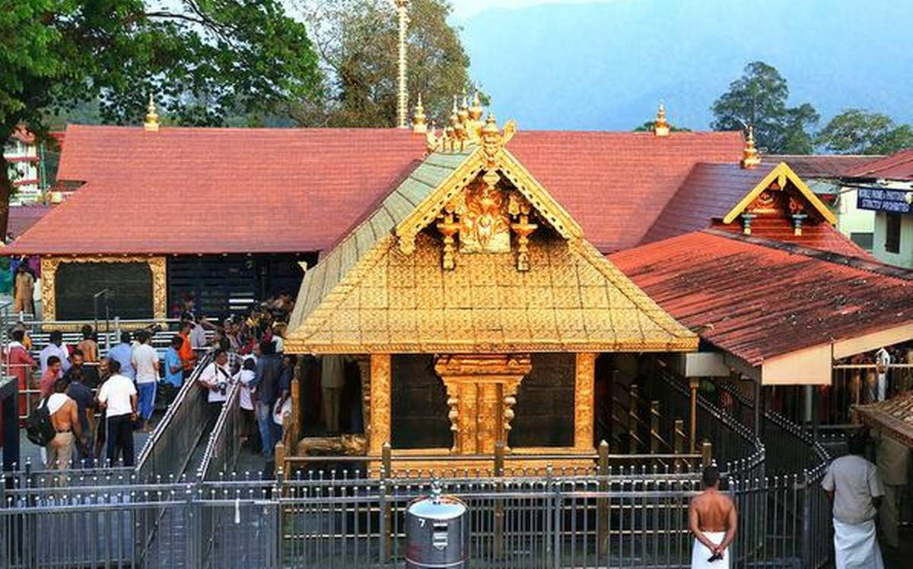

TEMPLES
Temples in Kerala, often referred to as "God's Own Country," are renowned for their distinct Dravidian-influenced architecture, tranquil settings, and deep-rooted traditions. Key examples include the incredibly wealthy Sree Padmanabhaswamy Temple in Thiruvananthapuram, the vibrant Guruvayur Sree Krishna Temple (often called Dwarka of the South), the ancient Shiva-focused Vadakkunnathan Temple, and the scenic, pilgrimage-heavy Sabarimala Ayyappa Temple. These temples, frequently built with timber and featuring traditional mural art, are famous for their strict rituals, annual festivals, and specific offerings like garlands.

Guruvayur Sree Krishna Temple, Thrissur
The Guruvayur Sree Krishna Temple in Thrissur, Kerala, is a premier Vaishnava pilgrimage site known as "Bhuloka Vaikunta" (Holy Abode of Vishnu on Earth). Dedicated to Guruvayurappan, it is one of India's busiest temples, featuring traditional Kerala architecture, strict dress codes, and a 17th-century sanctum. The temple stands facing the East with a Gopuram (tower) each on the East and the West. While the one on the East is called the Kizhakkenada, the one on the west is called the Padinjarenada. The pillars of light called the 'Deepasthambam' are located in the front and East side of the Nalambalam, a square shaped column. The Deeepasthambam on the eastern side stands 24 feet high and has thirteen circular receptacles. When completely lit up, it is a magnificent sight to behold. The Dwajasthamba, a 70ft tall flag staff which is fully covered in gold is yet another famous sight at the temple. The idol of Lord Krishna is placed inside the Garbhagriha which is located inside the inside the square shaped Sreeekovil. The Sreekovil also has two stairs and three other rooms as well. Inside the temple, one can also see the images of Lord Ayyappa, Edathedathu Kavil Bhagavathy and Ganapathy. The Thulabharam is one of the most popular offerings at Guruvayur Temple. In this ritual, devotees are weighed against jaggery, coconuts, sugar or bananas on a giant set of scales. This quantity is then given to the Lord as an offering. The temple is also one among the most popular wedding destinations in the state. The annual festival of the temple falls during Feb-March and is celebrated with much pomp and frolic but this is not the only prominent festival here. Other celebrations like the Guruvayur Ekadasi, Ashtamirohini, Vaishakam etc. are amid the other popular festivals at this temple. The one festival that evokes curiosity though is the Guruvayur Aanayottam (elephant race)The largest land mammal on earth is put up against each other in a race.
Timings: Open 03:00 A.M. - 12:30 P.M. & 04:30 P.M. - 09:15 P.M.
Sabarimala Sastha Temple, Pathanamthitta
Located in Pathanamthitta district in Kerala, the Sabarimala Sree Dharma Sastha Temple is dedicated to Lord Ayyappa. Situated atop a hillock, the Sree Dharma Sastha Temple is surrounded by mountains and dense forests that are a part of the Periyar Tiger Reserve. It is one of the largest annual pilgrimage sites in the world, with an estimated 10 – 15 million pilgrims visiting the temple every year. What makes Sabarimala unique is the fact that this sacred hilltop, perched 3000 feet above sea level, transcends barriers of caste, creed and religion, welcoming all who seek spiritual solace.The 18 steps leading to the sanctum sanctorum are a significant aspect of the pilgrimage. Devotees can ascend these steps only after carrying the irumudi kettu. Each step represents a specific virtue or vow that a pilgrim must uphold. Upon reaching the top, devotees are greeted with the sight of the sanctum sanctorum, where the idol of Lord Ayyappa resides. The temple's sanctity and the aura of devotion create an atmosphere of deep spiritual energy. The most important festival at Sabarimala is the Mandalam-Makaravilakku season, which lasts for 41 days, culminating in mid-January. During this time, the temple sees a massive influx of pilgrims. The highlight of the festival is the Makara Jyothi. Millions of devotees gather to experience this divine event.
Timings: 3:00am–1:00pm, 3:00–11:00pm
Vadakummnathan temple, Thrissur
This temple is a classic example of the architectural style of Kerala and has monumental towers on all four sides and also a kuttambalam. Mural paintings depicting various episodes from Mahabharata can be seen inside the temple. Thrissur town gets it name after this ancient Lord Shiva Temple. The real meaning of the name Thrissur is the ‘Town with the name of Lord Shiva’. Thekkinkadu maidan, encircling the Vadakkunnathan Temple, is the main venue of the Thrissur Pooram. There is a multi-shrine complex called as Nalambalam or Chuttamabalam in the centre, with three main shrines dedicated to Lord Shiva as Vadakkunnathan, Shankaranarayana or Hari-Hara (a combined form of Shiva and Vishu) and Lord Rama. To the left of the entrance is the theatre hall called “Koothambalam”. This unique and beautiful structure has well-designed sloping roof of copper plates. This Koothambalam is a tall and spacious structure which contains fine vignettes of wood carving and interesting bracket figures.